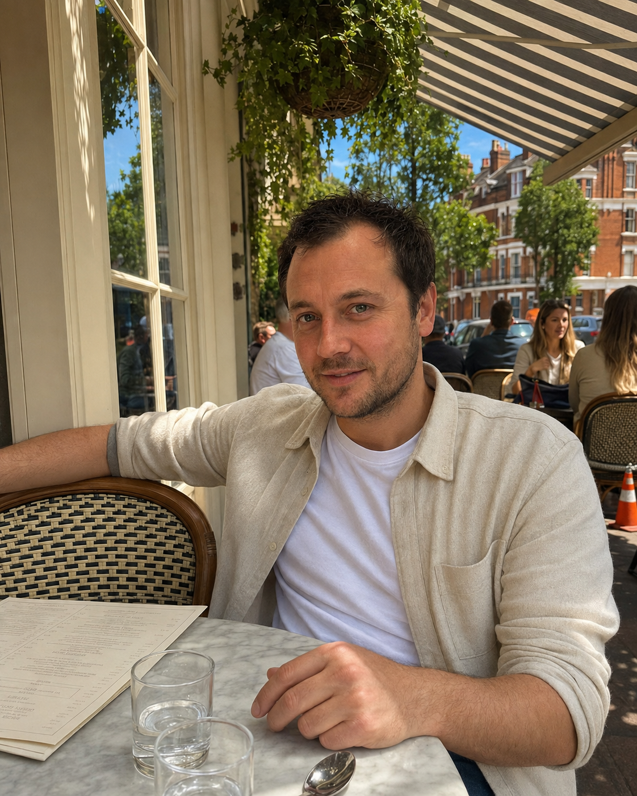
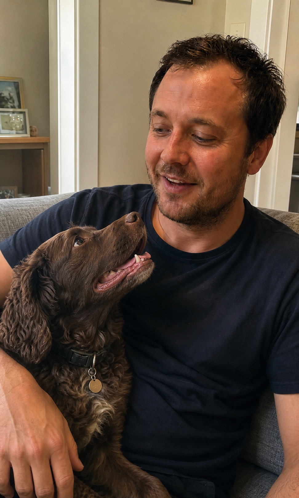
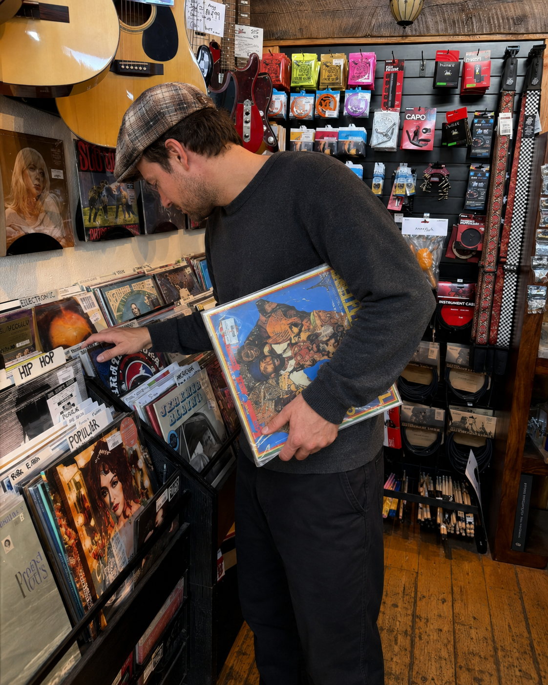

INTRO
Most men open their dating apps, see no matches, and start thinking the problem is their looks.
It usually is not.
The problem is that their profile gives nobody a reason to stop. It is the same badly angled mirror selfie, the group photo where nobody can tell which one you are, and the blurry night-out picture that looked better in your camera roll than it does on a dating app.
So girls swipe past before they ever get a proper look at you.
How you can use AI to get more matches
Dating apps have changed. Great photos are no longer something you need to spend hundreds of pounds on in a photoshoot to get. With AI, they are now quick and affordable to make.
The problem is that nobody shows you how to use it properly: how to create photos that actually look believable, what strong dating-app photos look like, or how to order them so hot girls stop, scroll, and swipe right.
That is exactly why we made this product.
It gives you:
- Three ways to create high-quality AI images: one free, one paid, and one if you already have a ChatGPT membership.
- 20 examples of what good dating-app photos look like.
- Five explanations of the exact photos killing your account.
- 20 prompts you can use to create stronger photos for yourself.
- The proven six-photo sequence that puts the photos you create in the order that gets the strongest response: more attention, more interest, and more reasons to message.
By the end of this product, your dating profile will not be average—and your matches will not be either.
Tip 1: A good photo is not automatically a good dating-app photo
A photo can be sharp, well lit, and professionally taken—and still be a bad dating-app photo.
And a photo can be slightly imperfect, taken on someone’s phone, and still be the one that gets the swipe right.
You are not putting together a photography portfolio. You are trying to get girls you actually like to look at a few photos and feel like you are someone worth meeting.
That will not happen because your photo has more pixels.
It happens when your photos do three things:
- Make it immediately clear what you look like.
- Make you seem attractive, relaxed, and like someone she would enjoy spending time with.
- Show enough of your life to give her a reason to be curious—and a reason to message.
That is exactly what this product teaches you to do.
What Good and Bad Dating-App Photos Look Like
GOOD & BAD EXAMPLES
WHY MOST MEN'S DATING PROFILES SUCK (AND WHY YOURS WON'T)
A lot of men's dating-app profiles suck because most of us don't have photoshoot-level photos sitting randomly on our phones.
What we do have is a few pics with our friends where you can't see our faces, mirror selfies, and blurry photos from nights out.
Those are great memories, but they don't work well as first impressions when we're trying to make that hot girl think we're fun, interesting, and someone worth talking to.
Run this quick scan on your profile to see whether you're suffering from the five main failure modes of the average men's account:
Failure 1: A first photo where she can't clearly tell what you look like or who you are—or you lead with a mirror selfie
Why this is bad:
The first few seconds decide whether she keeps looking or skips. If she can't instantly understand what you look like, the rest of your profile may never get seen.
Severity = STRONG.
Failure 2: Every photo looks basically the same
Why this is bad:
Five selfies, five headshots, or five photos in the same type of setting don't tell her anything new about you. A strong profile should make you feel like a real person with a life, not the same face repeated six times.
Severity = MEDIUM.
Failure 3: Your photos make your life look boring or empty
Why this is bad:
Your photos aren't just showing what you look like. They're showing what being around you might feel like. If every photo is in your bedroom, your car, or standing against a wall, there's very little for her to imagine herself joining.
Severity = STRONG.
Failure 4: Group photos make her work out which person you are
Why this is bad:
A group photo can be useful later in the profile, but if she has to inspect the image to work out who she's actually matching with, you've created friction for no reason. And if one of your friends is more visually striking, you've accidentally made them part of the comparison.
Severity = MEDIUM.
Failure 5: You don't have a photo that makes you look attractive and approachable
Why this is bad:
A lot of men's profiles swing too far one way: stiff, serious photos or messy, low-effort photos. You need at least one image where your face is clear, you look relaxed, and you seem like someone she'd actually enjoy meeting.
Severity = STRONG.
Here is what that looks like when you get it right.
GOOD EXAMPLE 1: IT LOOKS LIKE SOMEONE ELSE TOOK IT

Why this works:
He's in a real setting, doing something normal, and it feels like another person took the photo rather than him setting it up himself.
The café gives the image some lifestyle context, but it doesn't overpower him. You can clearly see his face, he looks relaxed, and the smile makes him feel warm and approachable.
Most importantly, the photo tells you something about what spending time with him might actually feel like.
What to copy:
Choose a setting you'd genuinely spend time in, have someone else take the photo, keep your face clear, and aim for a natural expression rather than a pose.
Strength = VERY STRONG.
GOOD EXAMPLE 2: GIVE HER SOMETHING TO BE CURIOUS ABOUT
Why this works:
The setting immediately makes the photo feel more interesting. It suggests travel, a nice evening out, or somewhere worth being without having to explain any of it.
The outfit helps too. He looks well put together without looking like he dressed specifically for a dating profile.
And because he isn't staring straight at the camera, the photo feels like a moment rather than a pose. It leaves a little unanswered—where is he, what's he doing there, and who took the photo?
That curiosity gives her more reason to stop and look at the rest of the profile.
What to copy:
Use an interesting setting, wear something simple but sharp, and don't feel like every photo needs direct eye contact. Sometimes the best photo gives a glimpse of your life instead of explaining everything.
Strength = VERY STRONG.
GOOD EXAMPLE 3: DOG PHOTOS

Why this works:
Dog photos are one of the strongest easy wins you can add to a dating profile.
They make you look warmer, more caring, and more approachable. They also give the photo a natural reason to exist, so it feels less staged than another picture of you standing around posing.
There are plenty of women who say they only swipe right on profiles that have dog photos.
This example works because it feels natural. He's outdoors, relaxed, and the dog makes the shot feel like part of his life rather than something created for Tinder.
What to copy:
Get a natural photo of you actually interacting with the dog. Don't just stand next to it looking at the camera.
Strength = VERY STRONG.
This product's goal is to move you away from the bad examples and towards a profile using tested, proven photo types that get you more matches.
Why the Six-Photo Sequence Cures Bad Profiles



Bad profiles make you easy to skip. There is nothing that holds attention, builds interest, or gives her a reason to start the conversation.
The six-photo sequence fixes that.
Your first photo gets her to stop. The next photos show enough of your life and personality to build attraction instead of losing it. The final photo gives her an easy reason to message you first.
You do not need all six photos for this to make a difference. If your current profile is weak, even replacing two or three bad photos with stronger ones from this guide can massively improve it.
But if you want the strongest version of your profile, use the full sequence.
You are not just trying to upload six decent pictures of yourself.
You are trying to control the order she sees them in and what each one makes her think.
This is how it works:
Your first photo has one job:
Stop the swipe.
It needs to make it immediately obvious what you look like and give her a reason to keep looking.
The next few photos then do the heavier lifting.
They show different sides of you. They build interest. They make you look like someone with a life, personality, and things going on.
By the time she gets deeper into the profile, she should have a much clearer picture of what being around you might actually feel like.
Then the final photo should leave something open—something that gives her an easy reason to message you.
A weird location. A dog. A hobby. Something happening in the background. Something she can ask about without having to invent a conversation starter from nothing.
So the sequence works like this:
Photo 1 — Stop the swipe
Clear face. Strong expression. You look good. No confusion.
Photo 2 — Build attraction
A stronger setting or outfit. Something that makes you look put together and gives the profile a bit more depth.
Photo 3 — Show personality
Dog, hobby, activity, café, record shop—something that actually says something about you.
Photo 4 — Show lifestyle
Travel, outdoors, a social setting, dinner, somewhere interesting. This helps her imagine what your life actually looks like.
Photo 5 — Add another side of you
Something different from the first four. If everything so far is polished, this can be more relaxed. If everything is casual, this can be smarter.
Photo 6 — Give her something to ask about
Finish with something that naturally creates curiosity or gives her an obvious conversation starter.
The important thing is that each photo earns its place.
If photos 2, 3, and 4 all basically say the same thing, you're wasting slots.
A good sequence should feel like she is learning something new about you as she moves through the profile.
Photo 1 gets attention.
Photos 2–5 build the picture.
Photo 6 gives her a reason to start talking.
Before you create them, you need to give the AI a clear set of reference photos.